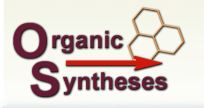

.png)
VP Informatics, Inc. Provides QA Solutions for a Leading Electronic Lab Notebook Company
Abstract
VP Informatics, Inc. has played a core role in enhancing the performance and reliability of a cloud-based laboratory data platform. We have led the development of personalized quality assurance (QA) solutions for a suite of tools by engaging in close collaboration with laboratory scientists, ensuring functional robustness and regulatory compliance, and continuously refining test frameworks—transforming the platform into a stable, user-centered platform for integrated biology and chemistry data management.
Client Feature: Web-Based Electronic Lab Notebook Platform
Unified Data for Seamless Collaboration
Their fully integrated cloud platform combines both chemical and biological data in one system, making it the perfect tool for enhancing collaborative research among internal teams and with external partners.
Streamlined Operations, Maximum Productivity
Whether you are a researcher, scientist, or lab manager, it offers the tools to streamline your laboratory operations and increase productivity.
Centralized Scientific Data Management
Our client’s Electronic Lab Notebook platform is a powerful module that is designed to simplify scientific data management by providing a centralized location for organizing and sharing research data.
Challenge
The company faced a recurring issue with the stability and reliability of its application in the production environment. With each new feature release, a significant number of user-reported bugs were emerging. These issues not only affected user experience but also led to frequent hotfixes and urgent rollbacks. The root cause was a combination of inadequate testing coverage, lack of robust QA processes, and limited visibility into the impact of new code on existing functionalities. This cycle of frequent bugs hindered development velocity while reducing user trust and increasing operational overhead.
VPI’s Multifaceted Solution
To ensure the functionality of various modules comprising the electronic lab notebook, we developed—and continue to execute—a multi-pronged quality assurance strategy.
Requirements Clarification & Traceability
VP Informatics mapped functional requirements (ELN, Registration, Assay, Inventory, Search, and Workflow) and non-functional requirements (performance, security, availability). We then created a traceability matrix linking requirements with test cases and regression suites, making it easy to track what’s been checked and to reuse tests when updating the system.
Test Planning & Coverage
Functionality
Experiment lifecycles, inventory management, chemical structure search, and file attachments.
Compliance
Audit logs, e-signatures, role enforcement, and SAFE BioPharma workflow validation.
Integration
Mock instrument data feeds (NMR, MS) with automated retriggering and parsing.
Security
SSO, role-based access control (RBAC), and permission boundary validation.
Performance
Browser stability under high concurrency and data-heavy operations.
Platform
Cross-browser support for Chrome, Firefox, and Edge across Mac and Windows.
In a Nutshell
- Improved Coverage: Enhanced testing protocols led to significantly more stable release cycles.
- Reduced Leakage: Bug leakage has dramatically decreased, boosting user confidence and compliance readiness.
- Lab Readiness: UAT and real-lab readiness improved, with fewer rejections and sign-off delays.
- Optimizing the Cross-Browser Experience: Cross-browser stability increased, reducing UI discrepancies.
VP Informatics, Inc. understands that QA for this company requires a hybrid strategy blending functional, compliance, integration, and performance testing—with a firm grip on domain-specific lab needs. Our personalized approach subsequently delivers a faster, more reliable platform, with improved compliance readiness and scientific accuracy optimized specifically for the company.
Inquire how VP Informatics can optimize your scientific data storage.

Powering the Digital Backbone of Organic Syntheses, Inc.
Abstract
Organic Syntheses, Inc.—a non-profit publisher of one of the most respected journals in synthetic chemistry—partnered with VP Informatics in 2012 to modernize and sustain its digital infrastructure. Over the past decade, this collaboration has led to the complete redevelopment and continuous maintenance of www.orgsyn.org, enhancing the user experience and accessibility of a key chemistry knowledge base.
Client Feature: Organic Syntheses, Inc. (orgsyn.org)
Since its founding in 1921, Organic Syntheses has served the chemistry community by publishing detailed, reproducible procedures for the preparation of organic compounds. It stands out from other journals with its rigor and reliability: all published methods and compound characterizations are meticulously verified in independent laboratories overseen by the Board of Editors.
The publication emerged from early efforts during World War I, when shortages of research chemicals in the U.S. prompted university chemists to develop reliable in-house synthesis methods. This task required a strong emphasis on accuracy, reproducibility, and collaboration—values that remain central to the mission of Organic Syntheses today.
Challenge
When Organic Syntheses approached us, they were facing challenges with a fragmented article submission process and long publishing cycles—sometimes stretching to six months. Furthermore, the website was struggling to organize and provide quick, digitized access to the immense amount of chemical compound and reaction data collected since 1921.
VPI’s Solution
Spotlight: Streamlining Submissions
VP Informatics centralized submissions, automated editor alerts, and introduced a fully functional mobile application for both iOS and Android. As a result, the publishing timeline was reduced to just two days, ensuring the content stays fresh, accessible, and efficiently managed for chemists.
Accelerated Submission & Editorial Workflow
Centralized submissions and automated alerts reduced publishing timelines from months to just two business days.
Mobile Access
A custom-built, responsive interface for iOS and Android, allowing chemists to access protocols while in the lab.
Custom Search Engine
Advanced indexing of reactions and compounds, enabling sub-second retrieval of over a century of chemical data.
Chemical Structure Integration
Full SMILES/MDL/MOL support with advanced structure visualization and intelligent matching capabilities.
Dynamic Content Delivery
Live rendering of peer-reviewed procedures, including integrated video support and automated BibTeX citation generation.
Hosting & Maintenance
High-availability cloud infrastructure with continuous performance monitoring and enterprise-grade security.
In a Nutshell
With the help of VP Informatics, Organic Syntheses’ online interface empowers users with intuitive content management tools built specifically for chemists, by chemists. Over 100 years of procedures have been fully digitized, indexed, and made easily accessible for researchers worldwide. VP Informatics continues to support submissions, reviews, and publications with an unprecedented 2-day turn-around. Our job was not complete with the site’s initial re-development—like scientific research itself, we are constantly updating and redefining new facets of the project.
See how VP Informatics can transform your team’s data workflows.
info@vpinformatics.com